Je cijfer
staat klaar.
Durf je?
Pack Opener dekt je nieuwe cijfers in Somtoday af. Klik erop en je cijfer komt binnen met een opening, geluid en een eigen kaart. Gratis, voor Chrome en Firefox.
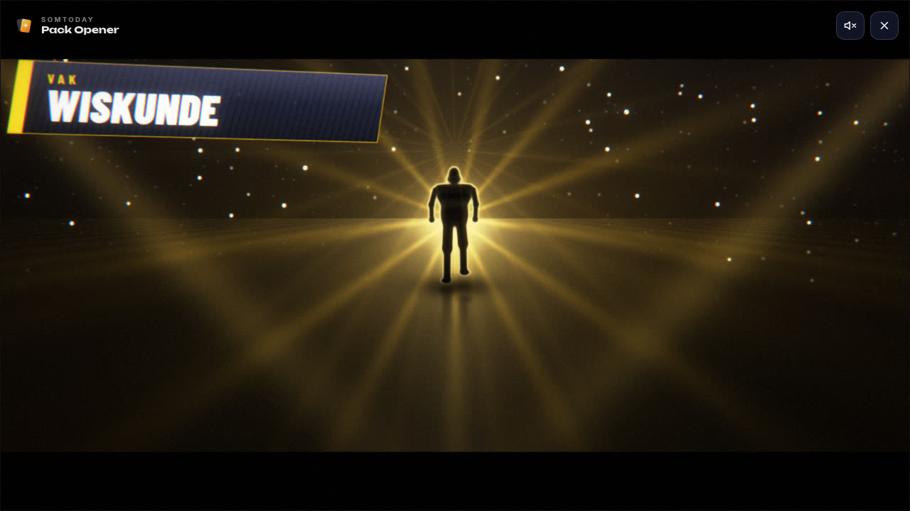
Zeven manieren
om te openen
Kies er één bij Instellingen, of laat de extensie elke keer iets anders kiezen. Het cijfer en de kaart zijn bij allemaal hetzelfde. Dit zijn echte beelden uit de extensie.
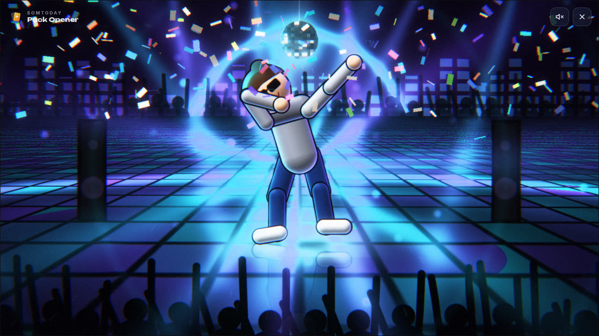
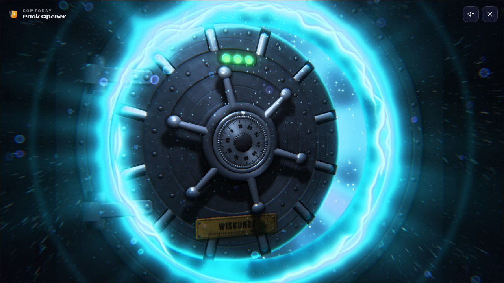
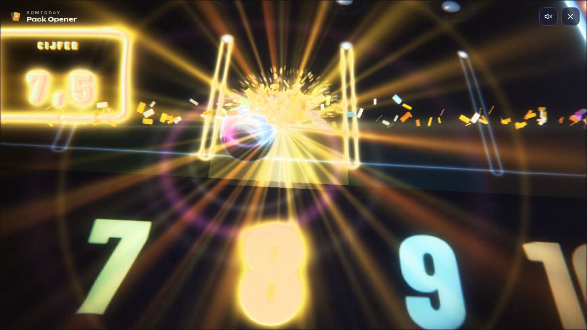
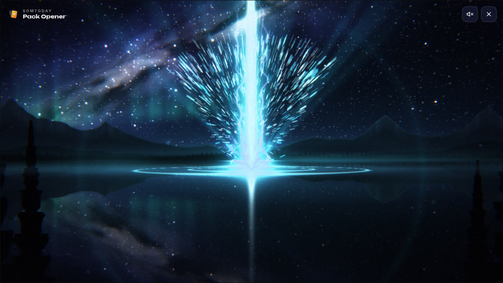
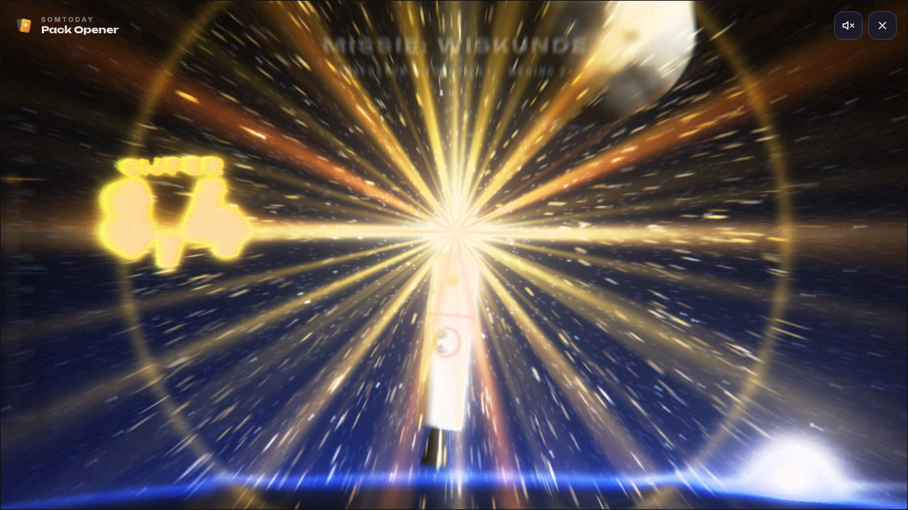
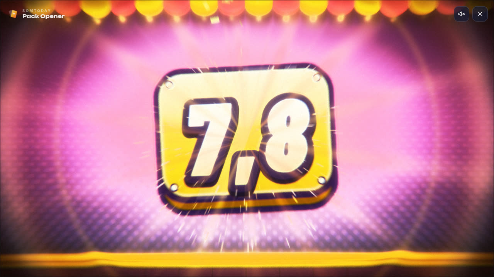
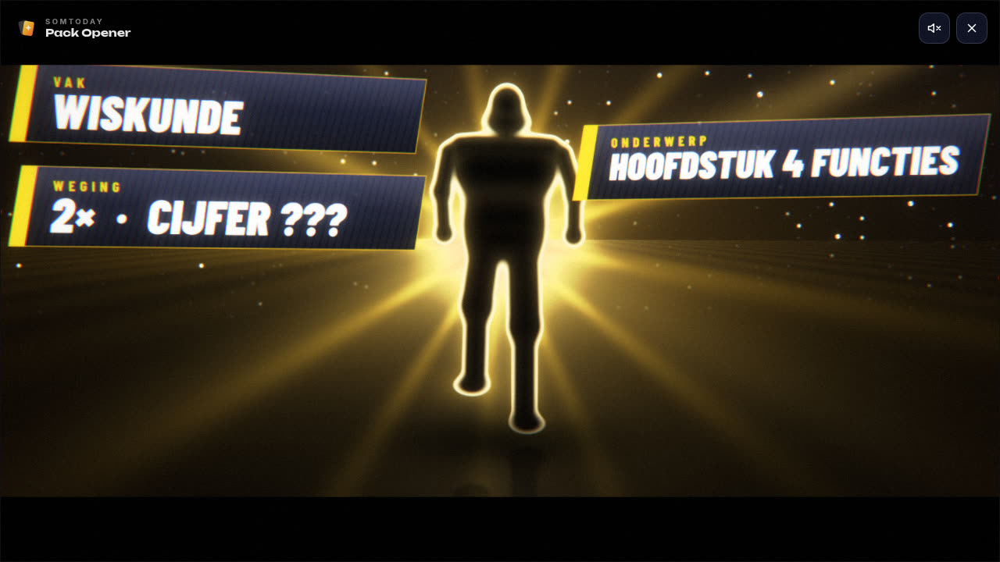
Vijf niveaus
Hoe hoger je cijfer, hoe groter de show. Een onvoldoende blijft grappig, en bij een 10 gaat alles los.
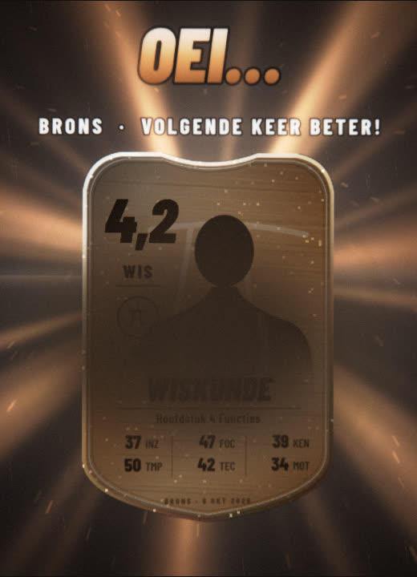
Bronsonder 5,5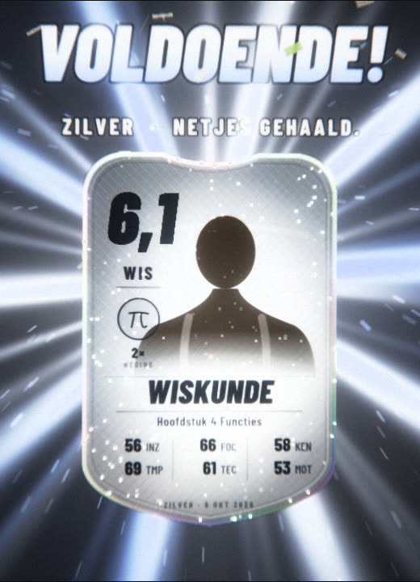
Zilver5,5 tot 7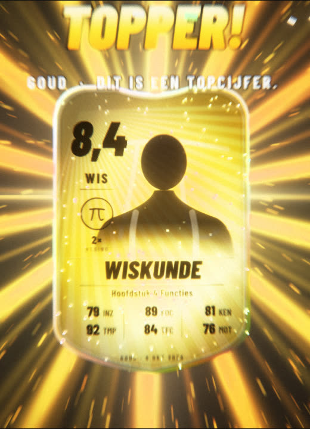
Goud7 tot 9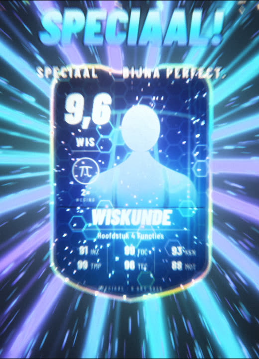
Speciaal9 tot 10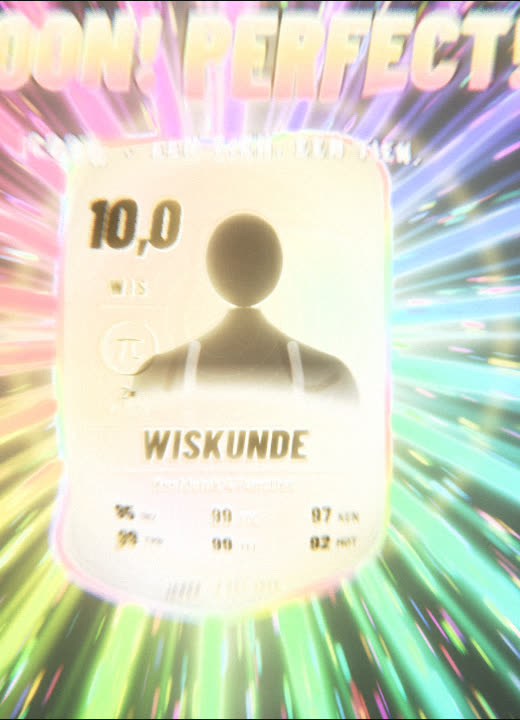
Icooneen 10Soms is een kaart zeldzaam
Eén op de tien kaarten is zeldzaam, ook bij een onvoldoende: een regenboogrand, extra licht, vuurwerk en een fanfare. Rond Halloween krijgt het pakje een spookachtig uiterlijk, met eigen geluiden. Beide staan standaard aan en zijn uit te zetten bij Instellingen.
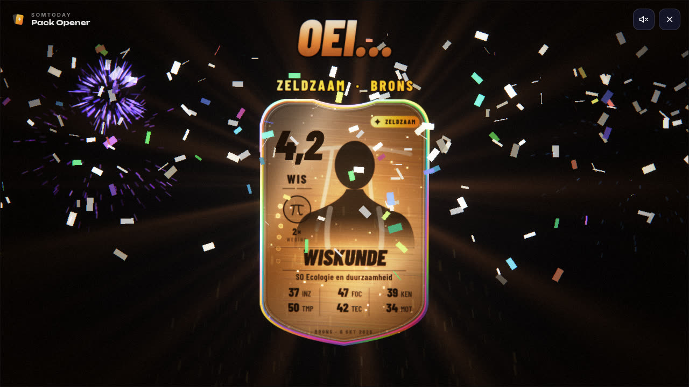
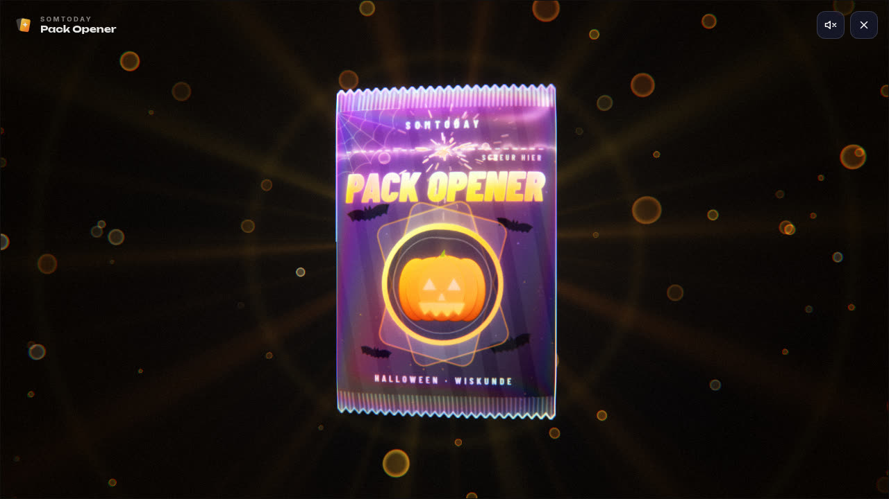
Installeren
De extensie staat nog niet in de Chrome Web Store of bij Firefox. Tot dat zo ver is, installeer je hem zelf. Dat kost een minuut. Kies je browser, kijk de video of volg de stappen.
Chrome, Brave en Opera
- Download de zip bij de nieuwste release op GitHub. Kies het bestand zonder “firefox” in de naam.
- Pak de zip uit. Klik met rechts op het bestand en kies Alles uitpakken. Er zit nog een map in:
somtoday-pack-opener. Dat is de map die je zo kiest. Je hoeft niets te openen, ookmanifest.jsonniet. Laat de map staan: verwijder je hem, dan stopt de extensie. - Ga naar
chrome://extensions(Brave:brave://extensions, Opera:opera://extensions) en zet rechtsboven Ontwikkelaarsmodus aan. - Klik op Uitgepakte extensie laden en kies de map
somtoday-pack-opener, de binnenste. Je kiest een map, geen bestand. Kies je de buitenste, dan krijg je een foutmelding. - Open
leerling.somtoday.nl. Je nieuwe cijfers staan nu afgedekt. Klik erop.
Microsoft Edge
- Download de zip bij de nieuwste release op GitHub. Kies het bestand zonder “firefox” in de naam.
- Pak de zip uit. Klik met rechts op het bestand en kies Alles uitpakken. Er zit nog een map in:
somtoday-pack-opener. Dat is de map die je zo kiest. Je hoeft niets te openen, ookmanifest.jsonniet. Laat de map staan: verwijder je hem, dan stopt de extensie. - Ga naar
edge://extensionsen zet linksonder Ontwikkelaarsmodus aan. - Klik bovenaan op Uitgepakte extensie laden en kies de map
somtoday-pack-opener, de binnenste. Je kiest een map, geen bestand. - Open
leerling.somtoday.nl. Je nieuwe cijfers staan nu afgedekt. Klik erop.
Firefox
- Download de Firefox-zip bij de nieuwste release op GitHub: het bestand met “firefox” in de naam. Uitpakken hoeft niet.
- Typ
about:debuggingin de adresbalk en klik links op Deze Firefox. - Klik op Tijdelijke add-on laden… en kies de zip die je net hebt gedownload.
- Open
leerling.somtoday.nl. Je nieuwe cijfers staan nu afgedekt. Klik erop.
Firefox houdt een tijdelijke add-on tot je Firefox afsluit. Daarna doe je stap 2 en 3 opnieuw. Zie je geen afgedekte cijfers? Klik rechtsboven op het puzzelstukje en geef de extensie toegang tot leerling.somtoday.nl.
Vragen
Ziet iemand mijn cijfers?
Nee. De extensie draait alleen in je eigen browser en stuurt niets weg. Er zijn geen accounts, geen analyse en geen advertenties. Lees het privacybeleid.
Is dit van Somtoday?
Nee. Het is een fanproject, niet verbonden aan of goedgekeurd door Somtoday of Topicus.
Wat kost het?
Niets. De code staat open op GitHub, dus je kunt zelf zien wat de extensie doet.
Het hapert op mijn laptop. Wat nu?
Klik rechtsonder in Somtoday op Pack Opener, ga naar Instellingen en zet Lage grafische kwaliteit aan. Dan start de animatie meteen in de zuinige stand. Hij schakelt ook zelf terug als hij merkt dat het niet soepel loopt.
Ik wil mijn oude kaarten terugzien.
Klik rechtsonder in Somtoday op Pack Opener en kies Galerij. Alle kaarten die je hebt geopend staan daar, alleen op jouw computer.